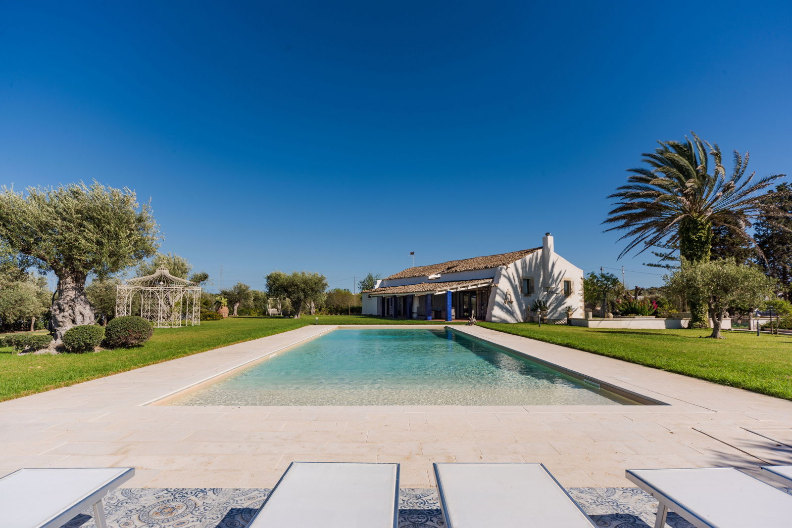

€860.000
Noto, Sicily, Italy
Open the listingRecently renovated Noto countryside farmhouse that keeps a historic palmento living room with fireplace, exposed stone and high ceilings, set in two hectares with about 150 olives and a private pool minutes from Marzamemi beaches — exceptional Sicilian character under €1M.
Opened 11 Sep 2026 via E&V expose __NEXT_DATA__ (EN). salesPrice €860000. 3 bed / 2 bath / ~310 m² / plot 20000. Private pool verified on expose body + gallery (schema hasSwimmingPool null). Shop=Engel & Völkers Siracusa. Locale Noto (Luparello). UUID/ref deduped against board + 09-11 existing files.